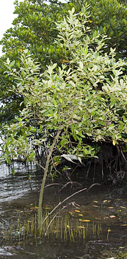
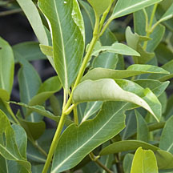
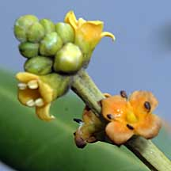
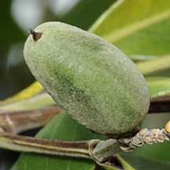
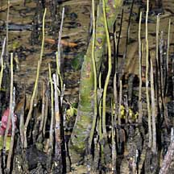
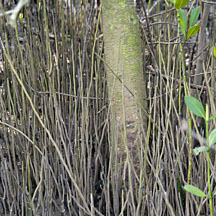
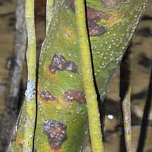

|
|
|
plants text index | photo
index
|
| mangroves > Avicennia in general |
| Api-api
jambu Avicennia marina Family Acanthaceae updated Jan 2013 Where seen? This is Singapore's rarest Avicennia. According to Ng, it is known only from St. John's Island, Pulau Tekong and Pulau Unum, where it is found on river banks or in marine lagoons. It has since been found on Pulau Semakau and also at Sungei Pandan. According to Hsuan Keng, it was found at Tuas and Pulau Sudong. Although rare in Singapore, according to Tomlinson "when the name is used in the widest sense, this species has the broadest distribution both longitudinally and latitudinally of the Avicennia, indeed of any mangrove". The range includes East Africa and the Red Sea (the type locality) along the coasts of the Indian Ocean, South China Sea, much of Australia into Polynesia as far as Fiji, and to North Island in New Zealand. Features: In Singapore, the tree may be tall (2-3m) or short (under 2m). Bark mottled greenish yellow, flaky and peeling in patches. Pneumatophores slender with pointed tips (10-15cm). Stems squarish all the way from flower/fruit to leaf-bearing portions. Leaves very similar to A. alba in shape and also has a whitish underside. Usually shiny yellowish green above, and dull pale below. Flowers big (0.3-0.6cm) in tight clusters. According to Tomlinson, the flowers are sweetly scented. Fruit oval, flattened circular or egg-shaped ("always as long as it is wide" according to Tomlinson) (2cm), with a small point at the tip, smooth velvety. Greyish or bluish green, never yellowish. Human uses: According to Giesen, the fruits are eaten, leaves fed to livestock while the wood produces good-quality pulp for paper production. In traditional medicine, the bark resin is used as a contraceptive and the leaves used to treat burns. Status and threats: This tree is listed as 'Critically Endangered' in the Red List of threatened plants of Singapore. |
 Pulau Semakau, Oct 11 |
 Leaves not so white underneath. Pulau Semakau, Aug 11 |
 Large flowers, crowded together.Stem squarish. Pulau Semakau, Oct 11 |
 Fruits flattened egg-shape, blunt tip. Bluish. Pulau Semakau, Aug 11 |
|
 Squarish stem to leaf-bearing portion. Pulau Semakau, Aug 11 |
 Pulau Semakau, Apr 09 |
 Fruit flattened egg-shape. Pulau Semakau, Jan 09 |
 Bark greenish, pneumatophores very tall. Pulau Semakau, Jan 09 |
 Bark greenish, pneumatophores very tall. Pulau Semakau, Aug 11 |
 Bark greenish, pneumatophores very tall. Pulau Semakau, Jan 09 |
| Api-api jambu on Singapore shores |
| Photos of Api-api jambu for free download from wildsingapore flickr |
| Distribution in Singapore on this wildsingapore flickr map |
|
Links
References
|